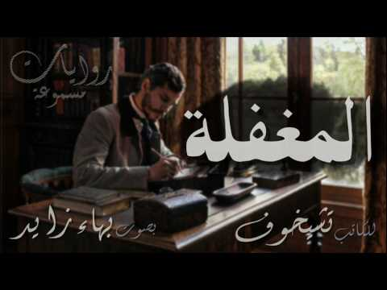
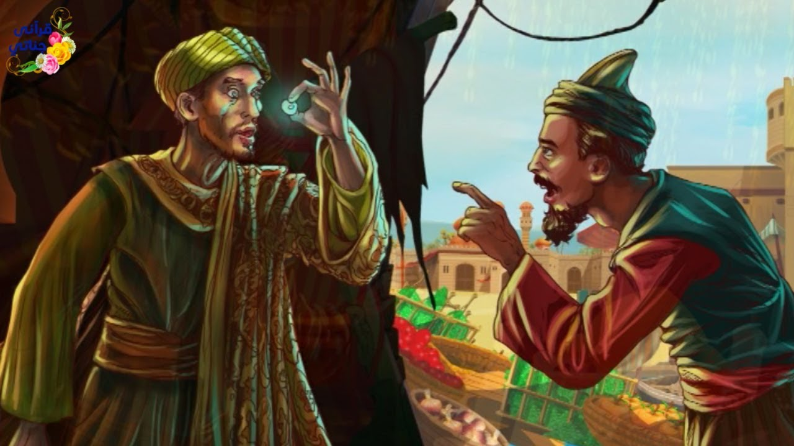

Audio Books
Some people prefer audio over text for learning and maybe you’re one of them. If you don’t like reading, experiment with audiobooks and see if this helps you with learning.
One of the main advantages of audiobooks is that you can pace the information you consume. I like to play my audiobooks at 1.5x or 2x speed and it doesn’t affect my comprehension. If you want to go through a lot of information, this is a great way to do that.
قصص عربية مسموعة

- المؤلف: أنطون تشيخوف
- الراوي: بهاء زايد
- نبذة عن الكتاب او القصة: قصة قصيرة من تأليف الأديب الروسي أنطون تشيخوف (يلفظ تشيخاف) (1860-1904). وهو طبيب وكاتب مسرحي ومؤلف قصصي روسي كبير ينظر إليه على أنه من أفضل كتاب القصص القصيرة على مدى التاريخ، ومن كبار الأدباء الروس. كتب المئات من القصص القصيرة التي اعتبر الكثير منها إبداعات فنية كلاسيكية، كما أن مسرحياته كان لها تأثير عظيم على دراما القرن العشرين. وتعتبر قصة المغفلة من أفضل القصص القصيرة التي كتبها باجماع العديد.

- المؤلف: غير معروف
- الراوي: قناة قرآني جناتي
- نبذة عن الكتاب او القصة: تتحدث القصة عن الانسان بصفه عامه وطبيعة بني آدم وما يلاقونه في هذه الدنيا من شهوات وكسل وطمع وتتمحور القصه عن صياد فقير اصطاد سمكة وتفاجأت زوجته بوجود لؤلؤة بداخلها فما الذي تتوقع ان يفعل بها.
English Audio Books

- Author: Leo Tolstoy
- Narrator: Fab Audio Books
- Overview: "The Three Questions" is a short story by Russian author Leo Tolstoy first published in 1885 as part of the collection What Men Live By, and other tales. The story takes the form of a parable, and it concerns a king who wants to find the answers to what he considers the three most important questions in life